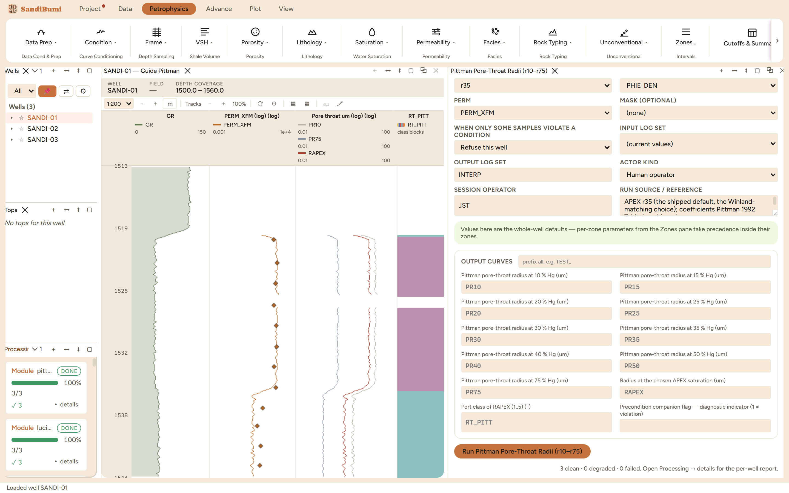

Pittman's pore-throat aperture family: nine regressions giving the pore-throat radius at mercury saturations from 10 to 75 percent, from porosity and permeability alone. It is the standard way to talk about pore throats without capillary-pressure data, and the port-class curve it cuts is a rock typing in throat-size language. The module ships the paper's Table 1 coefficients verbatim, including the two behaviours the paper itself warns about.
log10 rX = C0 + C1·log10 k + C2·log10 φ% [µm; k mD, φ percent] RAPEX = rX at the chosen APEX saturation RT_PITT: nano < 0.1 · micro 0.1–0.5 · meso 0.5–2.5 · macro 2.5–10 · mega ≥ 10 µm → 1..5
Each saturation row is an independent regression from Pittman's 1992 sample set. Two cautions travel with them, both the paper's own arithmetic. The correlation coefficient falls with saturation (0.926 at r20 down to 0.820 at r75), and Pittman states accuracy diminishes above the 55th percentile, so PR75 is the weakest row. And because the porosity exponent steepens from −0.385 at r10 to −2.626 at r75, in tight rock the high-saturation rows overtake the low ones: below about 11 percent porosity the family stops falling monotonically. Nothing is clamped, because forcing the ordering would report radii the paper never published.
3 clean. Run live at r35: RAPEX runs 0.76 / 1.06 / 8.58 µm at P10/P50/P90, and the port census reads micro 11, meso 289, macro 272, mega 1: a meso-to-macro section, consistent with the GHE middle classes the rock-typing chapter found on the same inputs.
SELECT value::INT cls, COUNT(*) FROM computed_curves WHERE curve_name = 'RT_PITT' AND NOT isnan(value) GROUP BY 1 ORDER BY 1
The APEX sensitivity: switching to r50 on the same inputs moves the census to micro 210, meso 99, macro 264. Nearly two hundred samples cross the micro-meso boundary because the apex saturation, not the rock, changed. The choice of APEX is a statement about where the pore system's controlling throat sits, and it deserves the same citation discipline as any parameter. Switching back to r35 reproduces 11/289/272/1 exactly.
The non-monotonicity caution, checked on this data: only 9 samples sit below 11 percent porosity, and none of them shows PR50 above PR40, so the inversion the paper warns about does not arise here. On a genuinely tight section it will, and the answer is a low APEX (r25 to r35, where Pittman's own porosity term is statistically insignificant), treating PR50/PR75 there as extrapolation.
